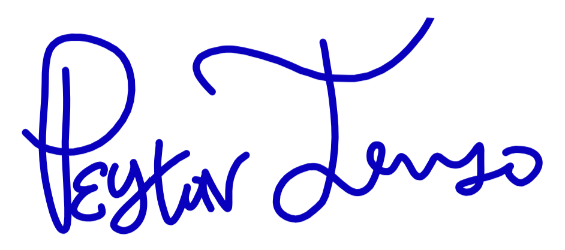

Dear Hiring Team;
I am a strong asset to any team because I approach projects with the mindset: phenomenal systems and teams are cultivated by people who are effective, efficient, and ethical. I pay attention to details, to processes, and to the people who make completing a project possible. My professional background reflects this. I have developed acumen in environments where organization, communication, and calm problem solving mattered from being immersed in customer service, data management, and community centered work. This including: supporting community at the Volunteers of America shelter, to coordinating outreach and donor engagement with AmeriCorps, and my strength in administrative and technical support responsibilities in customer service roles. My technical strengths are grounded in data organization, administrative systems, and communication. I work comfortably with tools like Google Workspace, Microsoft Office, QuickBooks, and Oracle applications. And I’m finishing my degree in Information Systems when I have the financial ability to re-enroll. I genuinely enjoy understanding how data, technology, and people interact. I’ve also developed experience in technical writing, training, supervising, and project coordination. I try to make the workday feel supportive rather than transactional. Teams function best when people feel respected and included, so I invest my time to helping cultivate that environment. I practice self regulation, have a guilelessly positive demeanor, and invigorate others towards authenticity. I am willing to help others and eager to support in conflict resolutions. I’m currently seeking remote or hybrid work that allows me to consistently show up for the team while managing my personal responsibilities. My child is young and well behaved, and if an occasional in office day is ever required, they could quietly accompany me in a workspace. My child was conceived through rape. I share that not as an appeal for sympathy, but as an expression of pride and honesty. Parenthood has shaped the way I approach responsibility, resilience, and integrity in my work. It has strengthened my resolve to build environments where people treat each other with respect. The flexibility for remote work will only increase my focus to strive for and accomplish superlative successes at work. If your organization values steadfastness, determination, and ethical collaboration, I would be honored to contribute. Thank you for your time and consideration.
Sincerely,
Peyton Trujillo
